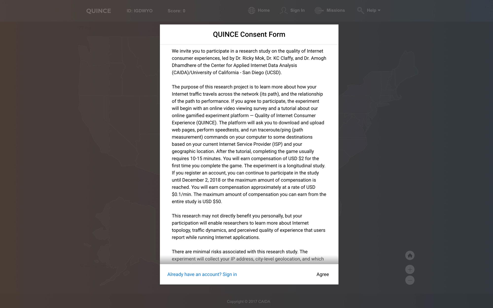
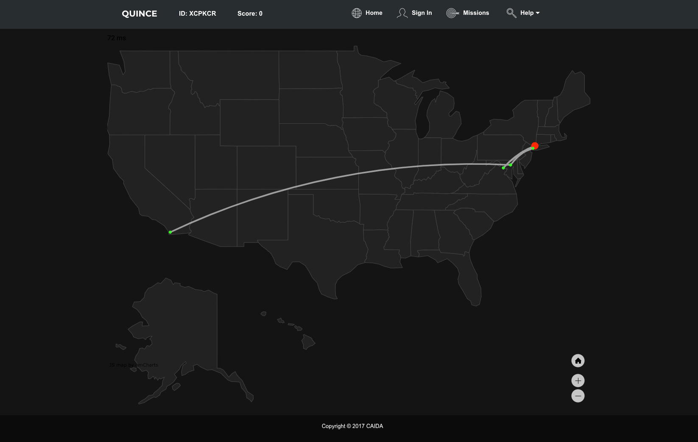
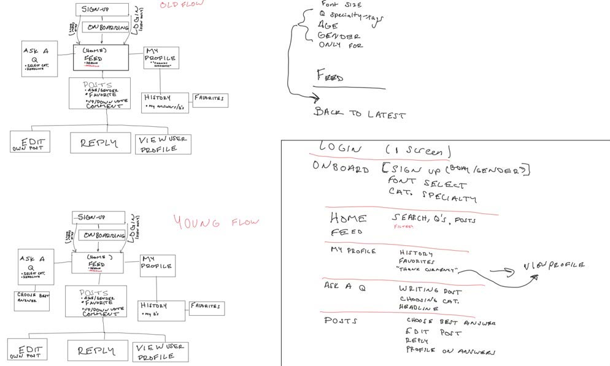

Hey, I’m a web developer based in San Diego and I design and develop for digital experiences. I currently develop student body-related websites @A.S. Graphic Studio and help lead UCSD’s largest design community @Design Co.
Development
Design
Work
About
Development
Design
Hey, I'm Andrew
75% dev, 24% design, 1% noodles
I’m a 4th year Cognitive Science–Design major at UCSD and an aspiring UX engineer with a passion and skillset in design prototyping, front-end development, and collaboration!
Currently, I design and develop websites at UCSD’s graphic design agency, @A.S. Graphic Studio, and lead workshops and code away with React.js @Design Co, UCSD’s pre-professional design organization.
Previously, I worked as a UX developer @UCSD’s IT Services and @The Center for Applied Internet Data Analysis (Supercomputer Center).
Away from my computer, I’m a big fan of basketball, puzzles, interior design, and photosynthesizing in the sun. Come talk to me about your favorite topic; I'd love to hear from you!
 esc
esc
CAIDA Internship
Date
June 2018 – September 2018
Role
UX Developer
Tools and Skills
HTML, CSS, Bootstrap, JavaScript, Meteor framework, Git
Description
For summer 2018, I served as UX Developer for a web platform called QUINCE, an abbreviation for Quality of Internet Consumer Experience. This platform enables end-users to participate in various Internet measurement tasks which they can accumulate and redeem virtual points for money.
Responsibility
Under the supervision of Ricky, I helped design and develop the web platform to increase participant engagement. Naturally, I spent some time researching effective ways to gamify measurement tasks so that they would appeal more to paricipants. As for the visual side, I worked directly to improve the layout of pages, to enhance visualizations by trying out various icons and images, and to implement interactive elements. I also repaired visual bugs and design breakdowns on the existing platform. Last but not least, I was tasked with visualizing the participants’ measurement results.
Consent Form
The consent form is the first thing participants see when accessing the web platform. I expanded the form vertically to cover a larger area of the screen than before and a gradient shadow was placed at the bottom of the form to indicate the presence of a scroll functionality. At a glance, the consent form is an organized, interactive element that informs participants.
Tutorial Modal
The tutorial modal window introduces participants to the interface and what their tasks are. Originally, the modal was much larger in order to accomodate a bulkier logo and an oversized font. The redesign lessens the font size and inserts paragraph spacing. The logo was replaced by a more appropriate sized one and the Continue button was adjusted to sit flush with the edges of the modal window.

Sign In Page
I designed and implemented the onboarding process that includes the sign-in, sign-up, and forgot-password screens. I also conceptualized this design with the other modal windows in mind. I chose a deep green to symbolize the currency that participants may earn through the web platform and I employed adequate spacing and contrast.

Interactive Map
In order to implement a subtle yet immersive, interactive US map, I dug into amCharts, a JavaScript charting and mapping library, to tweak changes within the code. The result is a seamless experience between interacting with the map and visualizing geographical locations.There's also a home button for those who get a little carried away.
Conclusion and takeaways
The onboarding process was a little tricky because I wanted to dive right in and begin contributing. But instead, I had to take the time to become familiar with Meteor, get certain dependencies installed on my computer, join services for communication with the team and attain access for other privileges.
However, I later realized that good things take time and effort. Progressing through the project and absorbing knowledge from everyone made it all worth the journey. Working closely with researchers in CAIDA and getting valuable experience working with the collected datasets was a privilege. Working in teams definitely helped advance my design and interpersonal skills because of the opportunities to receive feedback on my work that varied from mere conceptual ideas to high-fidelity quality.
Thank you to Ricky for the mentorship and guidance and to Jennifer for the collaboration.
esc
Sun God Festival 2020
Date
February 2020 – Present
Role
Web Developer
Tools and Skills
HTML, CSS + Sass, JavaScript
Relevant Links
Description
* Due to COVID-19, Sun God Festival 2020 has been cancelled. Artists featured here do not reflect the actual lineup.
The Sun God Festival is an annual music and arts festival presented by UCSD Associated Students Concerts & Events (ASCE). Of humble origins, the festival began in 1983 as a small, student-organized event that aimed to provide UCSD with a spring festival. In accordance with the San Diego climate, the 1st festival was rained out. Over the past 30 years, the festival has added student booths, vendor booths, three stages, art installations, and a campus-halting student atmosphere that is the envy of every college festival this side of the Rockies.
Responsibility
With the creative direction of Leo Cooperband and the management of AS Concerts & Events, I developed the Sun God Festival 2020 website.
esc
Design Co – Join Our Team
Date
June 2019 – Present
Roles
Web Developer
Unofficial photographer
Tools and Skills
HTML, CSS + Sass, JavaScript + React.js, Git
Description
Design Co is a student-run, pre-professional design organization at UC San Diego. Our goal is to help our community prepare for an industry setting by supplementing their learning with weekly events which include industry talks, information sessions and workshops. Each week, we consistently see a turnout of between 50 and 100 people and students report that they form lasting connections with each other at our events.
Responsibility
As a web developer at Design Co, I'm responsible for managing our website. I work closely with brand and visual designers in building high-fidelity prototypes using React.js while following these programming principles:
- DRY – Don't Repeat Yourself
- YAGNI – You Aren't Gonna Need It
- KISS - Keep It Super Simple
- SLAP – Single Level of Abstraction
 esc
esc
UCSD Census
Date
January 2020 – February 2020
Role
Web Developer
Tools and Skills
HTML, CSS, Bootstrap, JavaScript
Description
The University of California, San Diego plays an integral role in helping to shape the future leaders of our state, nation, and world. We have a responsibility to provide students, staff, and faculty with the information and opportunities to engage with the evolving world around them. With the 2020 Census quickly approaching, our goal is to ensure that the campus community is engaged and informed about how much is at stake with this upcoming census and it’s long-term impact on our communities.
Responsibility
I designed and developed the census website for UCSD. Given minimal direction and visual assets, I was able to deliver a responsive, interactive website in a timely manner.
 esc
esc
Triton Fest Spring 2020
Date
April 2020
Role
Web Developer
Tools and Skills
HTML, CSS, JavaScript
Description
Triton Fest is UC San Diego’s late night, weekend event series held at the beginning of the fall and winter quarters. From delicious free food to cultural performances, from go-kart racing to live music, there’s something for everyone at each Triton Fest event.
Responsibility
With the creative direction of Leo Cooperband and existing Triton Fest brand guidelines, I developed a linktree-style website for Triton Fest Spring 2020 where the hyperlinks update each week.
 esc
esc
GrandAMA Mobile App
Date
August 2018 – September 2018
Updated 2020
Role
UX Designer
Tools and Skills
Figma, Need Finding, Info Architecture, Prototyping, Competitive Analysis
Description
Grandma + (A)sk (M)e (A)nything = GrandAMA
This project was created from a 5 week course focused on designing and prototyping an accessible mobile application to accomodate the lifestyles of people ages 50+. Our solution bridges the gap between generations: the elderly can share advice with those who need it and the youth can ask for guidance. Through this app, users are able to post a question and receive a thoughtful voice response from someone who may have experienced it before.
Responsibility
Given the broad prompt of creating a digital tool for a population of elders, my initial contribution was helping narrow our thoughts to a more focused concept:
Need Finding
I felt that older generations needed a way to keep up-to-date with younger generations in terms of culture, trends, etc. For example, grandparents have a difficult time trying to understand how their grandchildren are feeling and what they might be going through. They might even have trouble communicating and being on the same page, so to speak. So our team took this problem and we brainstormed.
Specifically, we took the needs of those seeking advice and the time and wisdom of those are willing to share it and created an app concept. Our concept does not focus on a method to address the needs of those ages 50 and up, but of everyone of all ages. The foundation of our idea stems from the former group being available for others as well as a rewarding sense of connection found from helping them out.

To summarize, the key challenges that we faced were:
- Help the elderly stay connected socially
- Make communication personal and genuine in a digital world
- Find a safe platform for anyone to ask real, personal questions
Information Architecture
With our advice-giving idea in mind, we set out to outline the information architecture, first with post-it notes then digitally with more detail. We determined that we would build for mobile rather than for desktop because of the prevalence of mobile devices and ease of touch-opening an app as opposed to typing a web URL into a browser.

Originally at the bottom navigation bar, we had a profile tab, a home tab that leads to the feed of questions, and an ask tab (all in the color blue in the image to the right). We also cared to include functions such as b ookmarks and history since these convenient functions are usually built into apps that have extensive amounts of information. Also planned was a voting system for best answers and a monetary tip button for extra appreciation.
Prototyping
After reviewing what was outlined, we decided we wanted to keep only what was essential in order to meet usability standards as well as create a streamlined user experience, especially for 50+ aged folks.
As a result, there were two types of screens to build for: answerers (ages 50+) and askers (all ages). The answerers only need to decide between skipping a question or answering it, whereas the askers can browse questions or post their own.

We first conducted user testing on paper prototypes, a collection of each group members’ low-fidelity mock-ups. We focused our critiques on the layout of the interface and the logical flow of user interactions.
Elements that we had in common included:
- Simple, large navigation icons
- Voting system to determine the best answers
- Profile for answerers and their most popular advice
- Search and answer system separated by categories
Final Prototype
Competitive Analysis
There already exists a few options for places that provide advice. Our most notable competitors include Quora, Reddit, and Yahoo Answers. Taking a closer look at the competition, we singled each one out and then summarized GrandAMA's advantages over them:

One complaint for Quora is that there is no restriction on who can ask and answer questions. By enforcing an age restriction on who can answer questions, we hope to control the pool of responses. Other Quora users, on the other hand, complain about the censorship on Quora through the "be nice be respectful" policy, which restricts any content that can be deemed as "not nice or respectful". Though it has good intentions, users feel that they can’t freely express themselves without offending anyone. We want to encourage honest, yet respectful discussions, especially as it relates to personal matters.

Though usernames are semi-anonymous, post/comment history is available to anyone. On grandama, we want to keep the confidentiality of users who post questions seeking advice. Reddit also allows users to pay, or "give gold", to another user to unlock features. Ideally, we would want GrandAMA to be completely free to use and ad-free.
Yahoo has a feature of linking all activity back to its user, which the user can delete during a temporary window of time. A user can be anonymous to the public through a nickname but any activity is still tied to that nickname and profile. Yahoo’s forum itself has tons of questions from users asking how to remain anonymous. The answers can be both simple and complex. This points out that remaining anonymous is in demand.

GrandAMA allows users to ask questions to a qualified group of elders without having their profie revealed. GrandAMA borrows a feature from other competitors: a voting system where the best answers can be viewed at a glance. However, what sets us apart is the web app’s consideration towards the answerers. To accomodate an older population, answerers respond through voice messages instead of the traditional way of typing an answer.

Conclusion and takeaways
Our mobile application helps the two demographic groups, elders and youth, with their respective needs. By bringing together the wisdom of elders with the eagerness to learn of the youth, GrandAMA creates a mutual relationship between altruistic users intent on giving back to one another.
esc
Illustrations and Prototypes
Day Trip Icons

Icons of everyday objects presented in a flat lay presentation.
Dropbox Parallax
A simple example of parallax scrolling on a web page.
Smile

A simple example of line animation on a web page.
Rocket Countdown

A color-changing background that adjusts according to the remaining time on the set countdown date.
Money Tracking Script

I wrote a Python program to keep track of my expenses and earnings. A summary presents data for different categories, seasons, and months.
Quickly Web App

I was the lead full-stack developer for a class scheduling tool for UCSD students. I adhered to the client's design guidelines, cleaned large datasets, and delivered the final product in a timely manner.
esc
Digital Photography
Date
September 2017 - Present
Scope
Web Design
Web Development
Tools and Skills
HTML, CSS, JavaScript, Adobe Lightroom + Photoshop, Digital Photography
Relevant Links
Description
I began this project in 2017 to document my digital photography and to provide clients a resource to reference my work and get connected.
Responsibility
I continuously update and improve this website to practice my front-end development skills and to give visitors a more pleasant user exeperience.